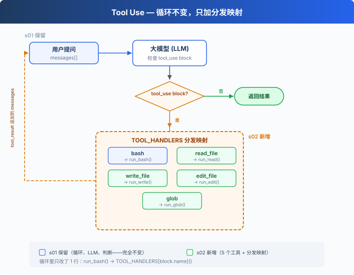

s02: Tool Use — 多加一个工具，只加一行
s01 → s02 → s03 → s04 → ... → s16 → s17
"加一个工具, 只加一个 handler" — 循环不用动, 新工具注册进 dispatch map 就行。
Harness 层: 工具分发 — 扩展模型能触达的边界。
只有 bash 一个工具
s01 的 Agent 只有一个 bash 工具。读文件要 cat，写文件要 echo "..." > file.py，改文件要 sed。
模型想的是"读这个文件"，却要拼出 cat path/to/file。多了一层翻译，浪费 token，还容易拼错。
Bash 已经能做这些事，为什么还要加工具？
这些工具没有给 Agent 增加新的原始能力——同样的操作 Bash 都能完成。它们改善的是模型与 Harness 之间的接口。调用带有 path 参数的 read_file 时，模型不必把意图翻译成 shell 语法，因此能减少引号和转义错误。
Harness 看到的也不再是一整条不透明的命令字符串，而是具名操作和结构化参数。这样后续策略可以更精确：s03 能按工具和路径决定放行或拒绝，s04 能在统一 hook 点记录操作。s02 先搭好这些章节依赖的分发结构。
全局视角：工具分发

s01 的循环完全保留（LLM 调用、tool_use block 判断、消息追加）。唯一的变动在工具执行那 1 行：run_bash() 替换为 TOOL_HANDLERS[block.name]() 查表分发。
给 Agent 加一个工具只需要做两件事：
- 定义工具：在
TOOLS数组里加一条描述 - 注册处理函数：在
TOOL_HANDLERS字典里加一个映射
从 1 个工具到 5 个工具
s01 只有一个 bash：
TOOLS = [{"name": "bash", ...}]
def run_bash(command): ...
s02 加到 5 个，每个工具都是独立定义：
TOOLS = [
{"name": "bash", "description": "Run a shell command.", ...},
{"name": "read_file", "description": "Read file contents.", ...},
{"name": "write_file", "description": "Write content to file.", ...},
{"name": "edit_file", "description": "Replace text in file once.", ...},
{"name": "glob", "description": "Find files by pattern.", ...},
]
每个工具有自己的实现函数：
def run_read(path, limit=None):
lines = safe_path(path).read_text(encoding="utf-8").splitlines()
if limit:
lines = lines[:limit]
return "\n".join(lines)
def run_write(path, content):
safe_path(path).write_text(content, encoding="utf-8")
return f"Wrote {len(content)} bytes to {path}"
def run_edit(path, old_text, new_text):
text = safe_path(path).read_text(encoding="utf-8")
if old_text not in text:
return "Error: text not found"
safe_path(path).write_text(text.replace(old_text, new_text, 1), encoding="utf-8")
return f"Edited {path}"
def run_glob(pattern):
import glob as g
matches = sorted(set(g.glob(
pattern, root_dir=WORKDIR, recursive=True)))
shown = matches[:200]
if len(matches) > 200:
shown.append("... (more matches omitted; narrow the pattern)")
return "\n".join(shown)
工具分发
TOOL_HANDLERS = {
"bash": run_bash,
"read_file": run_read,
"write_file": run_write,
"edit_file": run_edit,
"glob": run_glob,
}
# 循环里只改了一行——从硬编码 run_bash 变成查表：
for block in tool_calls:
handler = TOOL_HANDLERS[block.name] # 查表
output = handler(**block.input) # 调用
results.append(...)
加一个工具 = 在 TOOLS 数组加一条 + 在 TOOL_HANDLERS 字典加一行。循环不变。
多个工具调用
模型经常一次返回多个 tool_use："读一下 a.py 和 b.py，然后列出所有 .py 文件"。
这些调用按照 response.content 中的原始顺序逐个执行。
速查
| 概念 | 一句话 |
|---|---|
| TOOL_HANDLERS | 工具名 → 处理函数的字典。加工具 = 加一行映射 |
| 工具定义 | 告诉模型"我能做什么"的 JSON schema |
| 多工具调用 | 模型可一次返回多个 tool_use，并按原始顺序逐个执行 |
| 循环不变 | s01 的 while True 循环一行都没改 |
相对 s01 的变更
| 组件 | 之前 (s01) | 之后 (s02) |
|---|---|---|
| 工具数量 | 1 (bash) | 5 (+read, write, edit, glob) |
| 工具执行 | 硬编码 run_bash() |
TOOL_HANDLERS 查表分发 |
| 路径安全 | 无 | safe_path 校验（仅 file tools） |
| 循环 | while True + tool_use block |
与 s01 完全一致 |
试一下
cd learn-claude-code
python s02_tool_use/code.py
试试这些 prompt：
Read the file README.md and tell me what this project is aboutCreate a file called test.py that prints "hello", then read it backFind all Python files in this directoryRead both README.md and requirements.txt, then create a summary file
观察重点：模型什么时候只调一个工具，什么时候一次调多个？多个工具调用的顺序和结果是否正确？
接下来
现在 Agent 有 5 个专用工具。file tools 受 safe_path 保护，但 bash 不受限制，rm -rf / 还是能跑。
s03 Permission → 在工具执行之前加一道门：这个操作安全吗？需要用户批准吗？